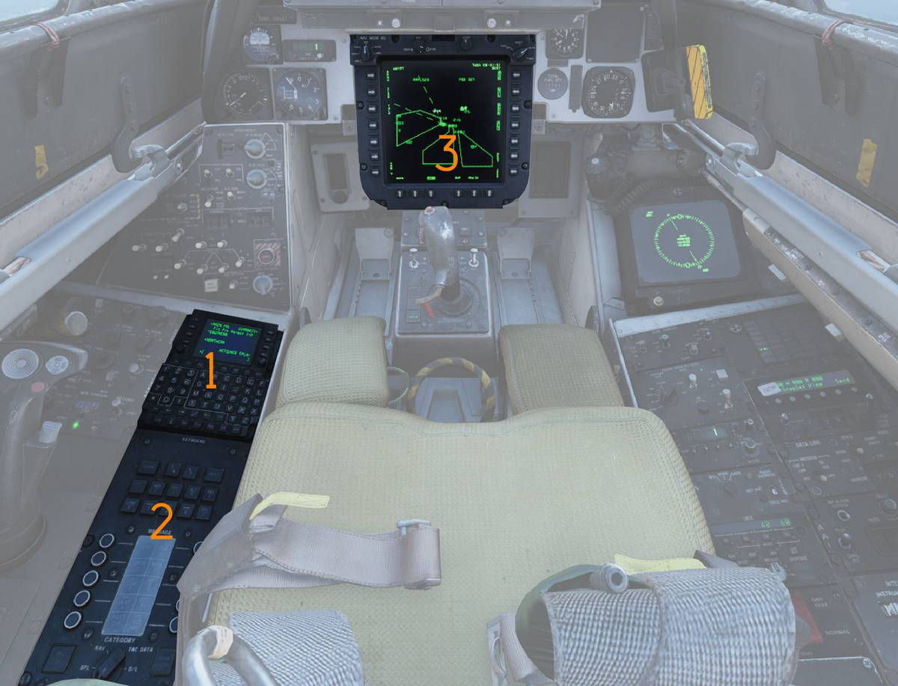

Introduction
The early F-14A and F-14B relied on a traditional Carrier Aircraft Inertial Navigation System (CAINS). In the F-14B Upgrade, this architecture was modernized with a new navigation suite centered around the Embedded GPS/INS (EGI) and the F-14 Mission Computer (FMC). While the older system relied entirely on inertial navigation, the upgraded system combines inertial sensors with satellite navigation, greatly improving long-term accuracy and reducing drift.
The F-14B(U)s primary navigation components are the H-764G Embedded GPS/INS (EGI) and the C-12284/A Control Display Navigation Unit (CDNU). The CDNU acts as the BUS controller for the MIL-STD-1553B digital data bus. The MIL-STD-1553B digital data bus was the primary element allowing for the integration of the Navigation system and associated weapons.
The EGI consists of a Ring Laser Gyro (RLG) IMU and a five-channel GPS receiver. A Kalman filter is used to combine the data of the IMU and the GPS resulting in a navigation system with essentially no drift.
Embedded GPS/INS (EGI)
The EGI is a Ring Laser Gyro (RLG) IMU complemented by an embedded five-channel GPS receiver to provide precise position in addition to the highly accurate RLG velocity and attitude measurements. A Kalman filter is used to optimally combine the data from both sensors resulting in a navigation system with essentially no drift.
The EGI provides three separate position solutions simultaneously:
- GPS
- Blended
- Free Inertial
The GPS solution uses the timing signals transmitted by the NAVSTAR GPS constellation of satellites to determine position near the earth’s surface. As long as four satellites are being tracked, extremely accurate position and time are available even when the EGI is in an alignment mode. The receiver also provides aircraft velocity in three dimensions, although during rapid maneuvering the velocity information can lag slightly due to update timing.
The Blended solution is the primary solution determined by the EGI, and is available for use as soon as the EGI estimates its drift rate is less than 5.0 nm/hr. It uses a Kalman filter that both improves IMU quality and GPS quality and also uses the GPS solution to refine the position derived from the IMU.
The EGI has the ability to remove the GPS data from the Kalman filter. This is useful in areas of known GPS spoofing for example. There are therefore two Blended solutions: Blended (Aided) and Blended (Unaided). The F-14 uses the Blended (Unaided) solution when GPS aiding is not desired because it still uses the Kalman filter to improve the IMU position outputs.
The Free Inertial solution is similar to the Blended (Unaided), however it also excludes the kalman filter and provides only a raw IMU output, this solution drifts much more than the others and is only used for IMU diagnostic purposes, it cannot be used for Navigation purposes by the CDNU or FMC.

EGI MODES OF OPERATION
The EGI has ten modes of operation. In addition to Off, Initialize and Navigate, there are seven separate alignment modes:
- Gyro Compass
- Stored Heading
- SINS In Motion Align (IMA)
- SINS Stored Heading
- GPS IMA
- Manual IMA
- Air Data IMA
The EGI chooses the alignment mode automatically as soon as the NAV MODE Select switch on the PTID is in any other position than OFF. The alignment mode is determined based on NAV MODE SEL switch position, aiding data available, the state of the parking brake and any detected motion. After alignment the transition to Navigate can either occur automatically or by RIO action. For a detailed discussion of the alignment modes refer to the chapter on alignment modes.
Whilst the Aircrew will primarily interface with the EGI through the CDNU and use it for navigation purposes, the EGI is crucial for all functions of the F-14s weapons systems. An accurate position and altitude location is vital to employing GPS Guided Weapons (GGW).
The old AN/ASN-92 CAINS would drift significantly over longer duration flights, which would become visible when Datalink and Radar Tracks would not align properly anymore. This deficiency of the system has essentially been eliminated by the EGI. With a GPS solution the EGI has essentially no drift, and even without a GPS solution, the RLG of the EGI now provides much better performance than the old CAINS.
The EGI paired with the CDNU and the MDL (Mission Data Loader) allows for the storage of up to 12 flight plans and the usage of up to 50 pre planned waypoints during flight. Additionally 49 more waypoints can be inserted during flight.
| System Mode | Symbol | Attitude Source | Position Source | Velocity Source |
|---|---|---|---|---|
| Blended – Aided (Y-Code Only) | BY | EGI | GPS/INS | IMU |
| Blended – Aided (Mixed P-Code and Y-Code) | BM | EGI | INS Only | IMU |
| Blended – Unaided (RIO Commanded) | IN | EGI | INS Only | IMU |
| Blended – Unaided (CSDC Commanded) | BU | EGI | INS Only | IMU |
| GPS | G | EGI | GPS Only | IMU |
| IMU/AM | IM | EGI | FMC Dead Reckoning | FMC Dead Reckoning |
| AHRS/EGI | AE | AHRS | EGI (Aided — GPS/INS; Unaided — INS) | IMU |
| AHRS/GPS | AE | AHRS | GPS | GPS |
| AHRS/AM | AH | AHRS | FMC Dead Reckoning | FMC Dead Reckoning |
| NAV FAIL | — | None | None | None |
(EGI Modes Of Operation - Displayed in bottom right of PTID and bottom of HSD)
Navigation System Caution and Advisory Lights/Legends
The caution advisory panel on the RIO’s right knee panel has three advisory lights that indicate failures within the navigation system (IMU, NAV COMP, AHRS). The panel also has two other advisory lights, C&D HOT and AWG-9 COND, that are indirectly related to navigation system operation. Illumination of either or both of these lights could mean degraded navigation operation because of improperly working displays.
NAV COMP Light / NAV HUD Display
The NAV COMP advisory light in the RIO annunciator panel will illuminate any time a fault is detected in the EGI, CDNU, or SDC that could degrade the navigation solution, or when communication is lost between the EGI and CDNU (i.e., a NAVBUS failure occurs). A "NAV" indication will display on the HUD in window 34 anytime a NAV COMP light appears. The light/NAV display will also appear any time a tolerance level for a particular mode of flight is exceeded. The NAV COMP advisory light/NAV display should be treated as a cue to check the status indications on the CDNU. The RIO should read the CDNU annunciator line and, if necessary, the status page, to determine the exact nature of the fault.
IMU Light
If the IMU advisory light illuminates, there is either a failure in the EGI IMU or in the analog circuitry that sends attitude information to the CSDC(R). If the IMU light illuminates without a corresponding NAV COMP light, the fault is in the analog circuitry. In either case, attitude information for the VDIG and missile control system will be provided by the AHRS. If only the IMU light illuminates, the EGI is still providing a complete navigation solution to the CSDC(R) and CDNU; only attitude information to the flight instruments is affected. If both the IMU and NAV COMP lights illuminate, in addition to bad attitude information, the Blended and Free-Inertial solutions from the EGI will be unusable. The GPS solution may still be available. Check the EGI status on the CDNU. Regardless of the nature of the fault, the CSDC(R) will switch the navigation system mode to the best available. The pilot does not receive any indication of an IMU failure.
STANDBY/READY Legends
The Navigation status indicators on the PTID (STBY and READY legends) are used to interpret the status of the Navigation System. The figure below lists the possible combinations, the interpretation, and required actions, if any.
| Status | Interpretation |
|---|---|
| ALIGN STBY ON READY ON (STBY and/or READY blinks – parking brake not set or hydraulic pressure low) | - Coarse align not complete. - "HS" blinks if NAV MODE is CVA and no GPS or SINS. If attempting a GPS IMA, wait for a valid GPS solution. If no GPS and no SINS, enter carrier LAT, LONG, true HDG, and SPD on the CDNU via the CV Manual Page. - Normal during align until ALIGN QUALITY ±3.0 nm/hr. |
| STBY OFF READY ON (STBY blinks – parking brake released for taxi) | Minimum Phoenix criteria met. |
| STBY OFF READY OFF (READY blinks – parking brake released for taxi) | ALIGN QUALITY <1.0 nm/hr. |
| NAVIGATE STBY OFF READY OFF | Selected NAV MODE SEL position valid. |
| STBY OFF READY ON | A better NAV MODE SEL selection is available (INS or IMU if in AHRS, INS if in IMU). |
| STBY ON READY ON | NAV MODE SEL selection failed. |
(Standby Ready Legend Logic - Displayed in top left of PTID)
EGI ALIGNMENT MODES
Associated equipment for alignment is the Control Display Navigation Unit (CDNU)
(

Before the EGI can be used for navigation, the GPS must be initialized and the IMU must determine its orientation with respect to true north. This process is termed "alignment", and the EGI accomplishes this task automatically, with the exact alignment mode determined by the reference data available. The unit is capable of providing accurate position data as soon as the GPS unit acquires the four satellites necessary for a solution. However, attitude and inertial velocity measurements require the alignment procedure.
Power is applied to the EGI by selecting any mode other than OFF on the NAV MODE SEL switch, at which time the unit transitions to its power-up initialization (INIT) mode. In this mode it performs a Startup BIT; loads initial values for position, velocity, and time (PVT); loads the GPS almanac if necessary; checks the availability of data for a Stored Heading Alignment; and then transitions to the appropriate alignment mode.
Initial position, date, and time values must be entered via the CDNU. The EGI will use (and the CDNU will display) its last known values until new data are entered or GPS becomes available. While in INIT, all navigation outputs are set to zero, null, or invalid as appropriate. The RIO must verify the correct position appears in Line 1 of the CDNU START 1/2 or START 2/2 page. Upon verification that the position is correct, LSK1 should be depressed. If the entered position is the one to which the EGI initialized, the alignment will continue normally; if the position is significantly different (greater than approximately 20 miles), the alignment will restart.

(
(
(
(
(
(
(
(
(
(
(
(
(
| Symbol | Meaning |
|---|---|
 | Alignment is initializing |
| Coarse Align Complete | |
| Align Complete |
💡 Initial position for alignment can only be entered using the CDNU; a CAP entry will have no effect. Information entered via the CAP goes only to the FMC, not the EGI. Communication with the EGI is only effected through the CDNU.
The EGI will perform a coarse alignment with the NAV MODE SEL switch in any position except OFF. However, full specified accuracy is only guaranteed if the NAV MODE SEL switch is left in an alignment position (GND or CVA) until ALIGN COMPLETE (a "Dot-in-Diamond") appears. The only operator action required once power is applied is the entry of initial position using LSK1 on either the START 1/2 or START 2/2 page of the CDNU.

(
(
(
(
(
(
(
💡 If power is applied to the EGI prior to the CDNU, depression of LSK1 on either of the CDNU START pages may be delayed until after the CDNU is functioning.
💡 Pressing LSK1 on either page reinitializes the GPS receiver, so momentary loss of GPS satellites can be expected. The EGI should reacquire satellites in 15–30 seconds.
💡 All available sources of reference data are used by the EGI Kalman filter to improve the quality of alignment. This includes GPS when in the aided mode, and air data (true airspeed, pressure altitude, and pressure altitude rate) at all times. The EGI provides the current status of the alignment for display on the CDNU and the PTID. Alignment Quality, GPS Figure of Merit (FOM), and Time in Alignment are updated every second. Discrete messages for Coarse Align Complete; 5.0 nm/hour, 3.0 nm/hour, and 1.0 nm/ hour align quality; Align Hold; and Alignment Complete signals are also sent to the CDNU and CSDC(R).

(
(
- NAV
- GND
- CV
- AHRS
- IMU
- OFF
(
(
(
(
- Off
- Initialize
- Gyro Compass
- Stored Heading
- SINS In Motion Align (IMA)
- SINS Stored Heading
- GPS IMA
- Manual IMA
- Air Data IMA
(
(
(
When the RIO selects an alignment mode using the NAV MODE SEL switch, alignment data will normally be displayed on the PTID This display can also be activated at any time, even while displaying tactical information, by depressing NAV FB-2 on the CAP. Information concerning the status of the alignment is displayed on both the PTID and the CDNU.
💡 If an alignment begins without the Alignment Display appearing on the PTID, verify that NAV category FB-2 is selected (button illuminated) on the CAP.
💡 If the PTID Alignment Display is selected after the alignment is complete, the display will contain the Time In Align at the time the alignment was accepted. The Align Quality (Q) and GPS FOM readouts, however, will accurately reflect the current state of the EGI, including any improvements to the alignment (due to GPS aiding) made after selecting INS on the NAV MODE SEL switch.
The PTID will first display a caret (v) on the far left side of the alignment display, indicating that INIT is in progress. At COARSE ALIGN COMPLETE the caret transitions to a diamond (◊).
As the alignment progresses, the diamond will move in steps across the alignment display from left to right aligning with four tick marks representing coarse align complete, 5.0 nm/hr, 3.0 nm/hr, and 1.0 nm/hr align quality, respectively. The display also shows the align time in minutes and seconds, Blended align quality in nm/hr, and the GPS FOM. The actual alignment mode is shown on the right side of display line 3 of the EGI Start 2/2 page on the CDNU. The left side of the same line indicates the detected position of the NAV MODE SEL switch (that is, the position that the CSDC(R) is currently sending to the CDNU).
Alignment telltales are displayed between the tick marks if necessary. An "S" will appear between the first and second tick-marks indicating invalid SINS data (only in CV align). An "H" will appear between the second and third tick-mark if the EGI goes into an align-hold state. An "HS" acronym will appear between the third and fourth tick-marks when a Manual InMotion Alignment (IMA) is in progress. The "HS" will flash if hand set data for the Manual IMA are needed.
Transition to NAV Mode
During alignment, the Free Inertial and Blended solutions are "Coupled", with gyro and accelerometer biases determined within the Kalman filter for both. Once the alignment is complete, the two solutions are decoupled, and the Free Inertial solution continues to use the bias information available at the time of de-coupling.
The Kalman filter continues to refine those errors for use by the Blended solution. Thus, even if GPS becomes unavailable, the Blended solution will provide a more accurate position than the Free Inertial solution. The intent of the Free Inertial solution is to provide an IMU derived dead-reckoning solution for IMU diagnostic purposes only. Align quality, displayed on the PTID and CDNU during alignment, is the EGI’s best estimate of what the Blended (Unaided) solution drift would be if the EGI were to transition to Navigate mode at that point.
The EGI signals the FMC when it has achieved full specified alignment accuracy. This is indicated to the aircrew by the appearance of a dot within the alignment status diamond on the PTID. The time required to achieve ALIGN COMPLETE is determined by the total amount of time in alignment with good data, and the alignment mode used. If ALIGN COMPLETE is set, alignment will continue until the EGI senses a ground speed of 80 knots, or, until the RIO selects INS, AHRS, or IMU on the NAV MODE SEL switch.
💡 Full specified INS performance (see the specific alignment sections below) is only guaranteed if the alignment is allowed to proceed to completion, i.e., the NAV MODE SEL switch stays in an alignment position (GND or CV) until achieving ALIGN COMPLETE and a dot appears in the alignment diamond on the PTID. If the switch is moved to NAV, AHRS, or IMU prior to ALIGN COMPLETE, the Blended solution will continue to improve, but the Free Inertial gyro and accelerometer biases will be frozen at the point at which the switch was moved out of alignment. Align time will stop incrementing, but blended align quality will show improvement.
GPS
Before the GPS can navigate, the GPS receiver must lock on to the satellite signals it will use to provide a position. To do this it uses a GPS almanac stored in its memory to determine where in orbit each of the satellites is. To properly use this information it must also know its own location, the current date and time, and its motion with respect to the earth. This information is supplied using the EGI Start 1/2 page.
Stationary Alignments
EGI stationary alignment logic is used whenever the parking brake is set, and the NAV MODE SEL switch is placed in the GND position to initiate an alignment. Two EGI modes are available in this case: Gyro Compass (GC) alignment and Stored Heading (SH) alignment.
Gyro Compass Alignment (GC)
Gyro Compass alignment is the primary ground based inertial alignment mode of the EGI. Full specified performance (unaided INS drift of less than 0.8 nm/hr) is available after 4.0 minutes in this mode.
GC alignments require an estimate of current position, GND selected on the NAV MODE SEL switch, and the parking brake set. In GC, the priority for present position initialization by the EGI is:
-
GPS, if available
-
CDNU entered Latitude and Longitude
-
The position stored in the EGI at its last shutdown.
💡 Note The contents of Home Base or any other waypoint have no effect on the alignment.
The procedure for initiating a GC alignment is:
- Parking Brake — SET
- CDNU — ON After CDNU SELF TEST complete:
- NAV MODE SEL switch — GND
- PTID — ON
- FMC — ON
- AWG-9 Cooling — AWG-9/AIM-54
- CDNU Index Page LSK1 — DEPRESS (Select EGI Start 1/2 Page) On either the EGI Start 1/2 or Start 2/2 page, ensure that present position is correct or enter a correct position.
- CDNU LSK1 — DEPRESS A momentary asterisk next to the position on display line 1 confirms that the Anti-Spoof function (Y-Code) is correctly initialized. When ALIGN COMPLETE (Dot in diamond):
- NAV MODE Switch — INS
- Verify Blended Mode (BY acronym on PTID)
If the parking brake is released before a COARSE ALIGN COMPLETE indication and the GPS is navigating (i.e., the GPS is tracking four satellites), then the EGI will transition to INIT and then to GPS IMA mode (see below). If the parking brake is released before COARSE ALIGN COMPLETE and GPS is not available, the alignment will stay in INIT until GPS is available.
💡 Note If the alignment stops because the parking brake was released prior to COARSE ALIGN COMPLETE, LSK3 on the EGI Start 2/2 Page (RSTRT ALGN) should be depressed after the parking brake has been reset, unless a GPS IMA is desired.
If the parking brake is released after COARSE ALIGN COMPLETE, the EGI will suspend the alignment, set ALIGN HOLD, and wait for the parking brake to be reset An ALIGN HOLD indication will be posted on the PTID and CDNU, and the STBY and/or READY legends will flash to indicate the suspension. Align time does not increment while in ALIGN HOLD, but Align Quality may improve.
💡 Note The EGI will not restart incrementing align time until 20 seconds after the parking brake has been reset.
💡 Note Once the EGI achieves ALIGN COMPLETE (Dot in Diamond appears), subsequent release of the parking brake will not cause an ALIGN HOLD. In this case the RIO should select INS on the NAV MODE SEL switch prior to releasing the parking brake.
Stored Heading Alignment (SH)
Stored Heading Align is a fast, ground based inertial alignment where the IMU identifies the direction of local vertical, then initializes position and heading to the value it had at the last shutdown. Specified performance in this mode is the same as that for a normal GC alignment. A complete GC reference alignment must be successfully completed just prior to the last EGI shutdown, and the aircraft must not be moved after the reference alignment in order to transition to a SH alignment. When these conditions are met, SH will complete in 30 seconds.
The parking brake must remain set throughout the SH alignment. If it is released, the EGI will transition to the GPS IMA mode. If the EGI determines that any of the other required parameters (besides "parking brake set") have not been met, it will revert to a GC alignment. The only indication that a SH has been done, is the presence of an ALIGN COMPLETE dot after thirty seconds of align time.
In-Motion Alignments
The carrier alignment procedures are used when NAV MODE SEL switch is set to the CV position. These procedures should be used whenever the aircraft is in motion with respect to the earth (either because it is taxiing on the ground, is aboard a moving carrier, or is airborne). The EGI supports five types of In Motion Alignment (IMA): SINS IMA, SINS SH, GPS IMA, Air Data IMA, and Manual IMA. A SINS alignment can be done using either the rf data link or the deck-edge cable. An In-Motion Alignment is begun by selecting the CV position on the NAV MODE SEL switch; from that point, the mode the EGI uses to align is dependent on the reference data available.
The data priority is:
-
SINS Data
-
GPS Data
-
Manual Handset Data
💡 Note Any time the EGI enters ALIGN HOLD with the NAV MODE SEL switch in CV and before COARSE ALIGN COMPLETE, the alignment will restart from the beginning.
SINS In Motion Alignment (SINS IMA)
In SINS IMA, the EGI uses the Ships Inertial Navigation System (SINS) to align the IMU. The inertial inputs are received by the ASW-27 and transmitted to the EGI. These inputs include ship’s latitude, longitude, north and east velocity, as well as roll, pitch, heading, and heading rate. To align the EGI using SINS data, use the following procedure:
- CDNU — ON
- DATA LINK — ON
- DATA LINK mode — TAC, After CDNU SELF TEST Complete:
- DATA LINK mode — CAINS/WAYPT
- NAV MODE SEL — CVA
- PTID Power — ON
- WCS — STBY
- CDNU INDEX Key — DEPRESS
- CDNU Index Page LSK1 — DEPRESS (Select EGI Start 1/2 Page), On either the EGI Start 1/2 or Start 2/2 page, ensure that present position is correct or enter a correct position.
- CDNU LSK1 — DEPRESS, A momentary asterisk next to the position on display line 1 confirms that the Anti-Spoof function (Y-Code) is correctly initialized. When ALIGN COMPLETE (Dot in diamond):
- NAV MODE SEL — INS
- Verify Blended Mode (BY acronym on PTID)
To transition to GPS IMA from SINS IMA, insert the following steps into the above procedure:
- 9a. Ensure GPS is navigating (FOM < 4)
- 9b. DATA LINK Mode — TAC
- 9c. On EGI Start 2/2 Page LSK3 — DEPRESS (RESTART ALIGN)
The EGI enters SINS IMA mode whenever the NAV MODE SEL switch is placed in the CV position with "CAINS/WAYPT" selected on the DATA LINK MODE Switch, and a SINS SH is not available. A full performance alignment (unaided INS drift of less than 1.0 nm/hr) using this mode will take 5 minutes providing that there are no SINS data dropouts lasting more than 4 seconds. If a dropout occurs, or the parking brake is released, the alignment will be suspended. An ALIGN HOLD indication will be posted on the PTID and CDNU, and the STBY and/or READY legends will flash to indicate the suspension.
If within 30 seconds the parking brake is reset, or SINS data again become valid, the alignment will continue. If the alignment is suspended before COARSE ALIGN COMPLETE, the alignment will restart with align time reset to zero. If SINS is lost for more than 30 seconds, and the Align Quality has not yet reached 3.0 nm/hr, the EGI will transition to MANUAL IMA. If Align Quality is better than 3.0 nm/hr, the EGI will transition to NAV mode
SINS Stored Heading Alignment (SINS SH)
SINS SH is the shipboard equivalent to the ground based SH alignment. In this mode the EGI uses stored spotting angle to reduce the time required for a full performance alignment to 4 minutes. A reference alignment must be performed in accordance with the procedure given above for SH, and the aircraft must not be moved relative to the ship. If SINS data drop out for longer than 4 seconds or the parking brake is released during SINS SH, the EGI will suspend the alignment and transition to SINS IMA.
GPS In-Motion Alignment (GPS IMA)
GPS IMA is available any time GPS data are valid. The mode can be entered in three ways:
-
The RIO selects CV on the NAV MODE SEL switch with the DATA LINK MODE Switch in TAC
-
The aircraft reaches 80 knots and Weight-OffWheels (i.e., the aircraft is airborne) without an alignment.
-
The RIO selects GND on the NAV MODE SEL switch and the pilot releases the parking brake prior to a COARSE ALIGN COMPLETE indication
💡 Note The EGI will enter GPS IMA with the NAV MODE SEL switch in either GND or CV if the aircraft becomes airborne and the alignment is not complete (no "Dot-in-Diamond").
If GPS IMA is entered before COARSE ALIGN COMPLETE (i.e., the alignment begins in GPS IMA), the alignment time for full EGI performance (unaided INS drift of less than 0.8 nm/hr) will be 10 minutes. If GPS IMA is entered after a COARSE ALIGN COMPLETE indication in GC, the EGI can complete the alignment in 5 minutes, provided at least 2 of those minutes occur while the aircraft is in flight (i.e., the aircraft takes off after COARSE ALIGN COMPLETE, but before an alignment complete dot is posted). If GPS data are lost, the alignment will be suspended and an ALIGN HOLD indication will be posted on the PTID and the CDNU.
💡 Note Once the EGI enters the GPS IMA mode, it will stay in that mode as long as GPS data remain valid and the NAV MODE SEL switch remains in an alignment position (GND or CV). If GPS is lost, the EGI will suspend the alignment if the NAV MODE SEL switch is in GND, and it will transition to Manual IMA if the switch is in CV (SINS data are not available). The EGI will transition to AIR DATA IMA if the aircraft is airborne.
Manual In-Motion Alignment (Manual IMA)
If, after entering SINS IMA, the EGI fails to detect valid SINS data, it will transition to the Manual IMA mode. If this occurs, the RIO should enter the appropriate latitude, longitude, carrier heading, carrier speed and Z-lever arm on the EGI Manual Page of the CDNU.
💡 Any time the "HS" telltale flashes on the PTID alignment display, the RIO should enter or re-enter the manual alignment data.
A Manual IMA will take 10 minutes, at which time an alignment complete dot will appear in the alignment progress diamond. Full specified accuracy for this mode is only 3.0 nm/hr unaided INS drift. For this reason, Manual IMA should be considered a backup mode. If the EGI is in Manual IMA and either SINS or GPS data become available, the RIO should depress LSK3 on the EGI Start 2/2 page (RSTRT ALGN) to restart the alignment. The EGI will not automatically transition to a better mode from Manual IMA.
In-Flight Alignments
If, for any reason, the EGI loses its alignment while airborne, or if it is necessary to launch before an alignment can be achieved, the EGI is capable of alignment in flight. The two modes available are GPS IMA and AIR DATA IMA.
GPS IMA Airborne
GPS IMA while airborne is equivalent to a GPS IMA done prior to takeoff. There are no restrictions on speed, heading, or maneuvers, only that GPS data be available. The time in alignment is 10 minutes (provided a GPS solution is available for that entire period), unless coarse alignment was completed in GC mode prior to take-off. In that case, the GPS IMA can complete in as little as 5 minutes, provided two of those minutes occur airborne. Inertial alignment quality for a GPS IMA while airborne will be the equivalent of a GPS alignment done on the ground or shipboard (i.e., < 0.8 nm/hr unaided INS drift). If GPS data are lost, the alignment will be suspended and an ALIGN HOLD indication will be posted on the PTID and the CDNU.
Air Data In-Motion Alignment (AIR DATA IMA)
Air Data IMA can be used whenever the aircraft is airborne (ground speed greater than 80 knots and Weight-Off-Wheels), CADC data and AHRS magnetic heading are valid, and GPS data are not available. If the EGI is in GPS IMA while airborne, and GPS data become invalid for more than 90 seconds, the EGI will automatically attempt to transition to Air Data IMA. Once in Air Data IMA, if GPS data is recovered, LSK3 on the EGI Start 2/2 page (RSTRT ALIGN) must be depressed before GPS IMA can be used. The total time for an AIR DATA IMA is 35 minutes and the best inertial alignment quality it can produce is 3.0 nm/hr.
💡 Note AIR DATA IMA requires that true heading be provided to the EGI with a maximum error of 2.5°. The RIO should thus verify that an accurate value for magnetic variation is entered into the FMC.
Aircraft heading, speed, altitude, and the wind must remain constant for the entire alignment period. If the air data become invalid for more than 5 seconds, the EGI will enter ALIGN HOLD. If this happens, the alignment will reinitialize once the data again become valid, and the Align Time will begin counting from zero. This mode should be considered a backup.